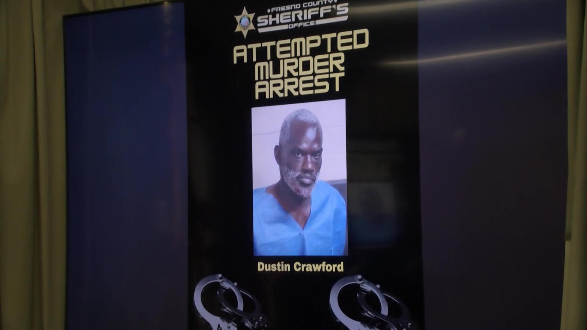
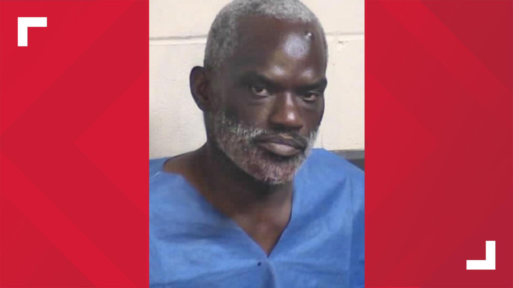
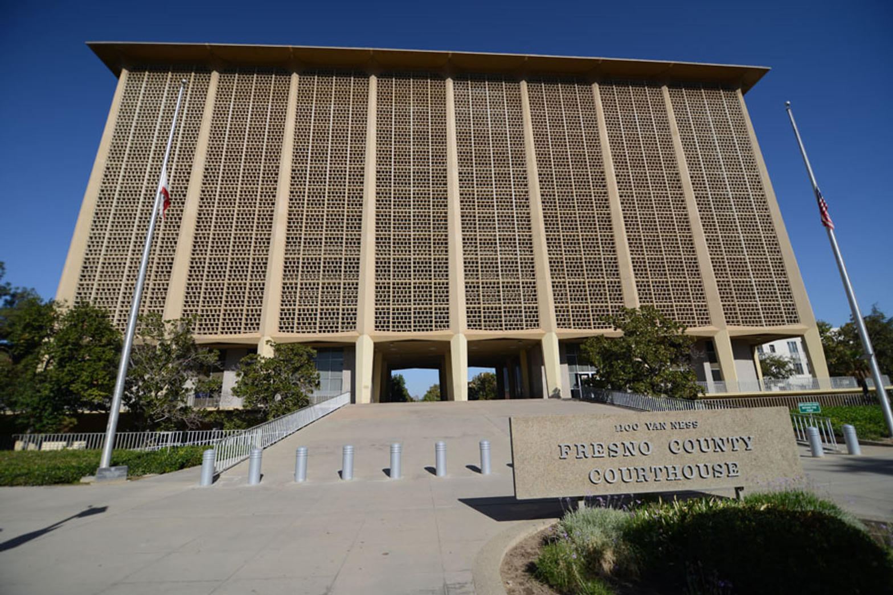

Dustin Crawford, 42, walked up to a senior deputy district attorney in broad daylight and stabbed him three times in the back. Officials call it retaliation. County leaders are now moving to arm prosecutors.
On the afternoon of Thursday, August 20, 2026, at approximately 1:13 p.m., a senior Fresno County deputy district attorney was stabbed three times in the back while standing with colleagues filming a campaign commercial for judicial candidate Ashley Paulson in Courthouse Park. The attack was captured on surveillance video. Within three minutes, deputies located and arrested Dustin Crawford, 42, of Fresno near Fresno Street and Van Ness Avenue after deploying a Taser. A weapon was recovered. The victim was conscious and talking when transported to Community Regional Medical Center; he was released the next day and is expected to make a full recovery. His name has not been released.


On Friday, August 21, Fresno County Sheriff John Zanoni, District Attorney Lisa Smittcamp, and Fresno Police Chief Mindy Casto held a joint press conference. The tone was unambiguous.
Sheriff John Zanoni:
“This was a violent act. This is a targeted act. It was not random. It was targeted directly at this district attorney.”
Zanoni stated investigators reviewed security camera footage from Courthouse Park and determined the attacker walked straight to the victim, bypassing other people standing nearby. “I’ve watched the video. He’s singled out, targeted this deputy district attorney from start to finish.” He noted the entire incident is on video. Zanoni also confirmed increased patrol checks in the park after the attack.
District Attorney Lisa Smittcamp:
“This is not a random act of violence by a mentally ill man. This was targeted.”
Smittcamp reported that the prosecutor is recovering at home and expected to make a full recovery; no vital organs were involved. She confirmed the victim was the same prosecutor who took a plea on Crawford’s 2016 case (originally charged as attempted murder of a neighbor, resolved as assault with a deadly weapon with a knife; five-year prison sentence after a period at Atascadero State Hospital for competency). Another former prosecutor who handled the 2016 sentencing was also present in the park that day.
“Because it shouldn’t take the stabbing of a prosecutor for people to take notice that there is no accountability and no responsibility for violent criminals in our communities.”
She called the episode an example of the failure of California’s criminal justice reforms and urged an end to what she described as “Hug a Thug” policies. In a KMJ interview she stated Crawford approached the group, indicated he knew who they were, then singled out the prosecutor and stabbed him three times in the back.
On the question of self-defense for prosecutors, Smittcamp was direct:
“I am the chief law enforcement official in the county of Fresno … if I want to carry a weapon on county property I can’t under a current ordinance. Kind of ridiculous … people like Mr. Crawford are empowered by the weakness of the criminal justice system.”
Police Chief Mindy Casto appeared alongside Zanoni and Smittcamp at the press conference. Public statements from the joint appearance focused on inter-agency coordination and the shared recognition that the attack was targeted and required both investigative and policy responses.
In the days after the stabbing, county and city officials moved quickly on a practical response: allowing qualified prosecutors and related personnel to carry concealed firearms on county property.
Sheriff Zanoni stated he has been in contact with city and county officials about an ordinance that would permit district attorneys, public defenders, city attorneys, and other employees with valid CCW permits to carry concealed weapons inside county facilities. Supervisor Garry Bredefeld is working with Zanoni and Smittcamp on the measure. Supervisors Nathan Magsig and Luis Chavez have voiced support; Chavez called the change “long overdue.”
Separately, Fresno City Attorney Andrew Janz issued a directive authorizing city prosecutors who hold a CCW to carry firearms (with existing municipal-code limits still applying inside City Hall and certain public buildings). Janz stated: “I want criminals who visit that courthouse to be aware that prosecutors have the ability to carry firearms.”
The inference is straightforward. When a prosecutor can be walked up to and stabbed three times in the back in a public park in daylight, and when the sitting District Attorney herself is barred by ordinance from carrying on county property, local government has concluded that the existing security model is insufficient. The ordinance effort is the concrete policy answer.

Courthouse Park is the civic open space between the Hall of Records and the main Superior Courthouse. It is used daily by attorneys, staff, campaign workers, and the public. A second stabbing incident occurred in the same park in June 2026. The pattern of open-space violence immediately adjacent to the county’s primary court facilities is no longer theoretical.
Crawford is booked into Fresno County Jail on $1 million bail. The criminal complaint includes:
Tulare County District Attorney’s Office is handling the prosecution to avoid conflict of interest. If convicted on all counts as charged, Crawford faces the possibility of life in prison.
Local officials have framed the attack as the predictable result of statewide criminal-justice policies that reduced accountability for violent offenders. Smittcamp’s language was explicit: the system has empowered people like Crawford. Zanoni and the supervisors are responding by expanding the right of prosecutors to arm themselves on the job.
This is the practical broadcast for anyone paying attention in Fresno and across California. When a prosecutor is selected from a group, stabbed in the back in a public park next to the courthouse, and the District Attorney herself cannot legally carry a firearm on county property, the gap between rhetoric and reality is measurable. The county is closing part of that gap with an ordinance. The larger accountability questions remain state-level.
High Tower District Stories records local public-safety events so the community has a durable, independent reference. This account is drawn from official statements, press-conference remarks, and contemporaneous local reporting.